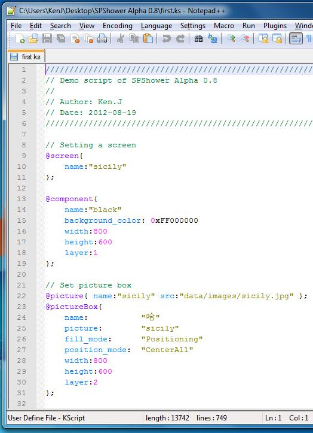
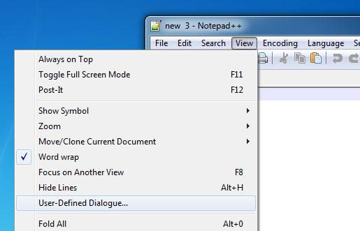
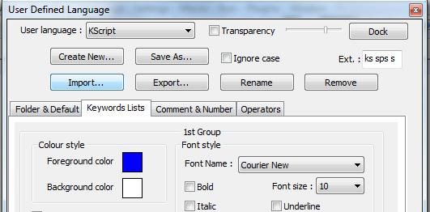
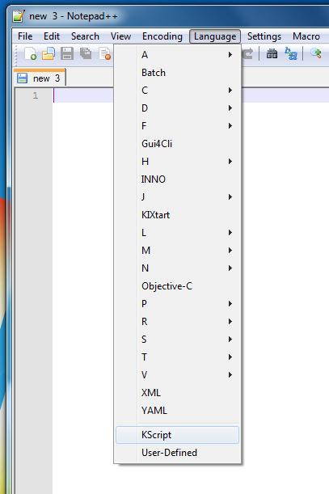
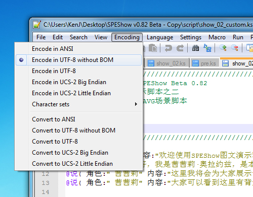

KScript 编辑器
我们推荐您使用 Notepad++ 作为您的 KScript 编辑器，因为他是一个免费的文本编辑软件，而且可以为KScript添加语法高亮，方便脚本的编写。重要: 若要使用包含中文字符的脚本，需将脚本保存为UTF-8编码。Notepad++编写UTF-8编码的设置方法在下面。
语法高亮效果如下：

您可以选择使用包含 KScript 语法的 Notepad++ 绿色版。下载地址在下面。
您也可以选择在已安装的 Notepad++ 中直接导入 KScript 语法文件。
导入 KScript 语法文件
这里介绍导入 KScript 语法文件的方法。请下载 KScript 语法文件（请使用右键另存为）。
下载后打开 Notepad++ ，点击“视图”-“用户定义语言”

弹出用户定义语言面板，点击“导入”（下图的“import”按钮，有些中文版将导入和导出弄乱了）按钮，并找到下载的 KScript 语法文件，进行导入。

导入成功后，重新启动 Notepad++，点击菜单栏中的“语言”，并在子菜单中选择 KScript 即可进行 KScript 语法高亮。

Notepad++ with KScript
本版本的 Notepad++ 包含 KScript 语法高亮，如果您觉得以上过程比较繁琐，并且您没有安装过 Notepad++，可以下载本版。
Version v6.1.8
2012-09-19
下载地址： 百度网盘
保存为 UTF-8 编码
若要编写中文脚本，请先按照下面的方法设定后再进行编写，或者按如下方法设定后将脚本内容复制过来。（设置为 UTF-8 或 UTF-8 without BOM 皆可）
